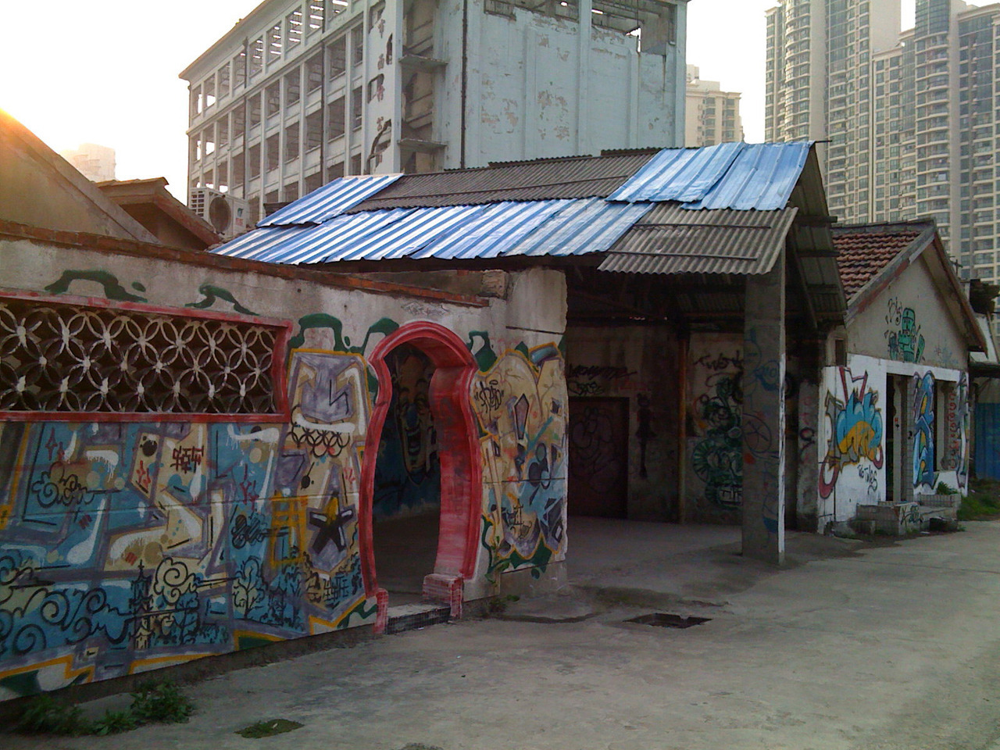
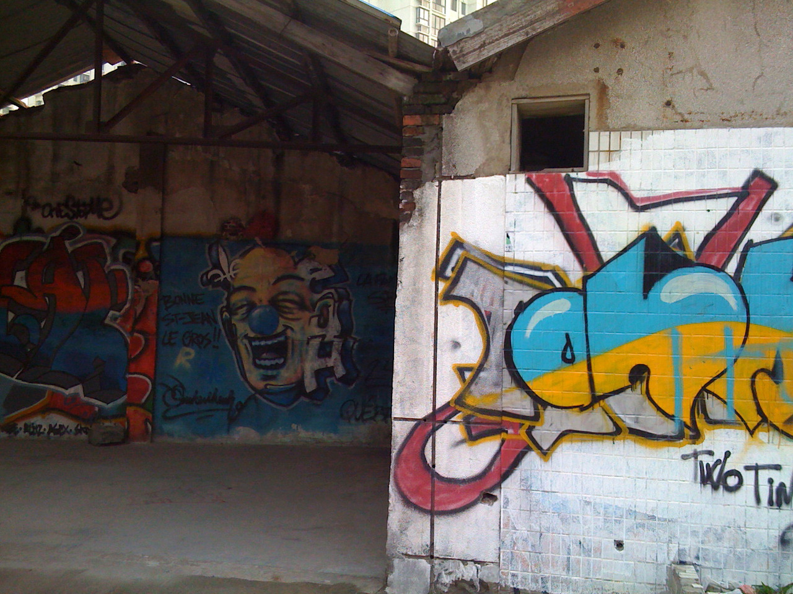
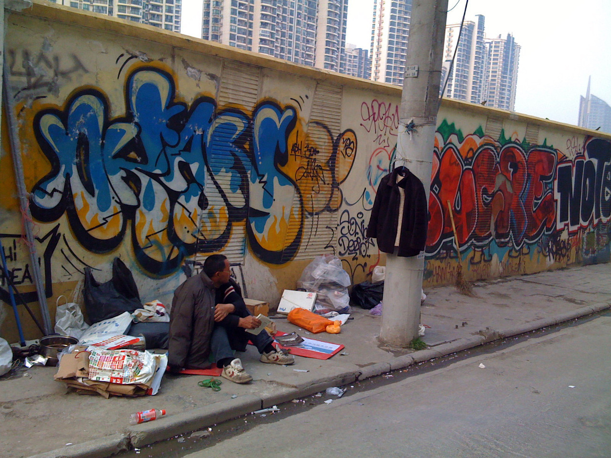
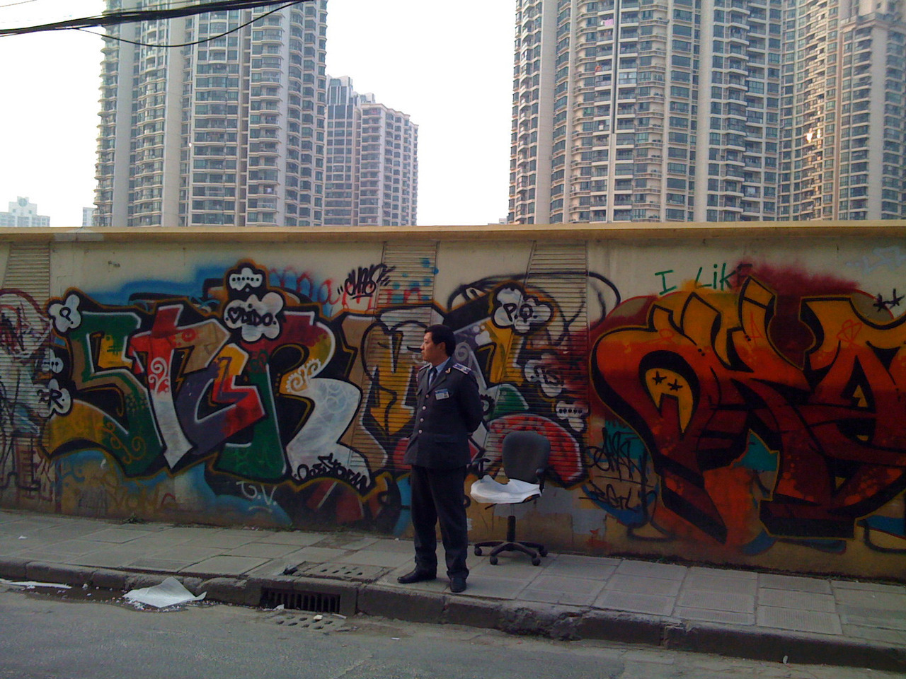
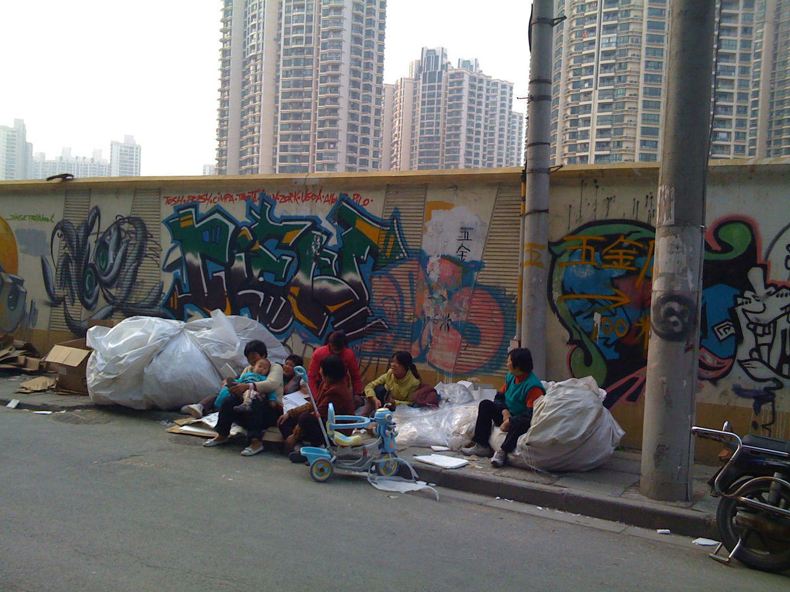
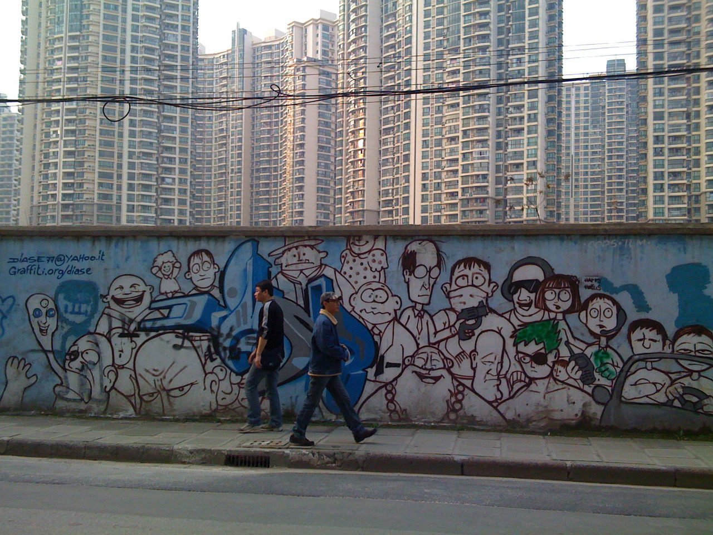
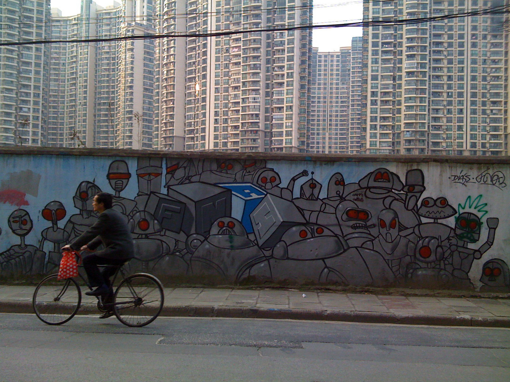

Mon, 23 Aug 2010 16:41:00 · shanghai · graffiti · tag · china · streearts
graffiti in shanghai part 2 these photos were







Graffiti in Shanghai ~ part 2
These photos were taken along Moganshan Lu Shanghai. Unfortunately, I can’t remember when, but it could be about a year ago. Not sure if they’re still there, so I probably should go and revisit the area just to check…